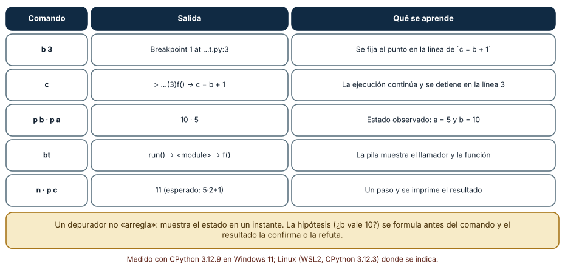
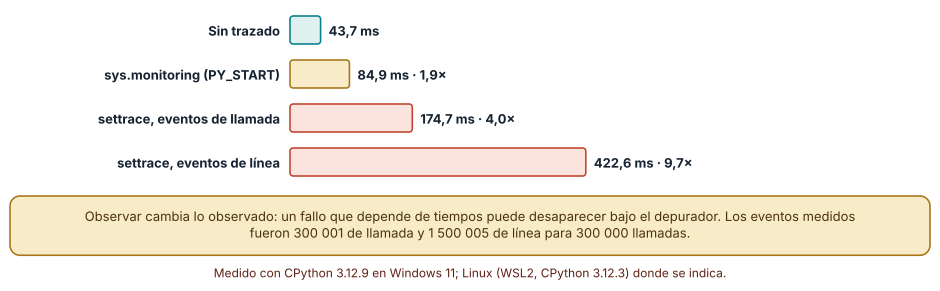
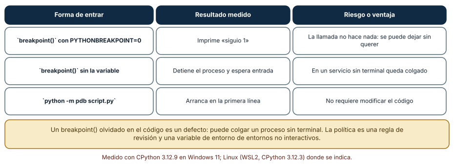

← SE-097 — Editores, IDE y servidores de lenguaje · ↑ Parte 08 · 📚 Índice completo · 🌐 Portal · SE-099 — Profilers de CPU, memoria, I/O y red →
Punto profesional y fundamento pedagógico
Punto profesional. La clase existe para observar ejecución con breakpoints, frames y variables sin confundir observación con ausencia de perturbación.
Por qué aparece aquí. Se sitúa después de Editores, IDE y servidores de lenguaje y antes de Profilers de CPU, memoria, I/O y red: convierte el conocimiento anterior en una decisión observable que la clase siguiente podrá reutilizar. La continuidad se comprueba en el artefacto, no por compartir vocabulario.
Error conceptual que debe corregir. Cambiar estado desde el depurador y tratar la corrida como equivalente.
Secuencia de aprendizaje. Antes de leer la solución, el estudiante predice el resultado del caso normal y del error conceptual anterior. Luego explica un caso resuelto paso a paso, construye un contraejemplo que cambie la decisión y, sin consultar el texto, reconstruye el mecanismo y lo aplica a una entrada nueva. La secuencia usa predicción, explicación propia, contraste y recuperación. ICAP distingue participación de construcción de conocimiento; How People Learn II exige conectar conocimiento previo, contexto y transferencia; la práctica de recuperación respalda producir de nuevo la explicación tras una demora; y Education for Life and Work exige devolución que explique la causa del error.
Evidencia de aprendizaje. Debug-session.md con hipótesis, breakpoint, stack, variable y efecto observado. Debe contener predicción previa, observación, explicación causal, contraejemplo, criterio de aceptación y una nota de qué dato haría cambiar la conclusión.
Límite de la conclusión. El depurador puede alterar temporización y comportamiento concurrente.
Trazabilidad fuente → afirmación
| Fuente primaria u oficial | Afirmación que respalda | Lo que no prueba |
|---|---|---|
| Debug Adapter Protocol | Breakpoints, frames, variables y negociación de capacidades; autoridad: Microsoft | No demuestra por sí sola que el artefacto del estudiante sea correcto. |
| Python Debugging and Profiling | Pdb, cprofile, timeit, tracemalloc y límites instrumentales; autoridad: Python Software Foundation | No demuestra por sí sola que el artefacto del estudiante sea correcto. |
Antes de empezar
Esta clase continúa el entorno reproducible de diagnóstico de la Parte 08. Recupera la evidencia de la clase anterior, añade una decisión propia de Depuradores, breakpoints y observación de estado y deja un artefacto que la clase siguiente deberá consumir. La pregunta activa es: ¿Dónde detener la ejecución para observar la primera divergencia y no solo el síntoma final?
Prerrequisitos
- Haber completado la clase anterior o reconstruir su contrato y evidencia.
- Python 3.11 o posterior, terminal, editor y Git; un segundo runtime es opcional y debe declararse.
- Trabajar con fixtures sintéticos: ninguna observación necesita datos de una persona o sistema real.
Problema auténtico
El orden incorrecto de la biblioteca de estructuras y algoritmos se manifiesta al final. Un breakpoint en la salida muestra datos ya corrompidos; se necesita ubicar la transición donde dos ejecuciones sanas dejan de coincidir.
Objetivos observables
Al terminar podrás explicar los cinco mecanismos de esta clase, predecir su comportamiento antes de ejecutar, construir un caso normal y uno límite, diagnosticar el fallo controlado, comparar una alternativa y entregar evidencia que otra persona pueda reproducir.
Mapa conceptual
Ver la notación fuente del diagrama
flowchart LR
N1[Debugger, adapter / runtime] --> N2[Breakpoint / condición] --> N3[Stack frame / alcance] --> N4[Step, continue / watch] --> N5[Heisenbug / costo de pausa]
N5 -->|fallo o cambio| N1El mapa se lee como una cadena de razonamiento, no como fases obligatorias del runtime. La flecha de retorno indica que un fallo o cambio de requisito obliga a revisar el modelo inicial; no autoriza a parchear solo la última salida.
Temas y por qué importan
| Tema | Por qué cambia una decisión profesional | Evidencia mínima |
|---|---|---|
| Debugger, adapter y runtime | La UI habla con un adaptador mediante DAP y este traduce al debugger o runtime. | Predicción, traza causal y contraejemplo de Debugger, adapter y runtime en debug-session.md |
| Breakpoint y condición | Un breakpoint pausa antes o después de una ubicación según runtime y mapeo de fuente. | Predicción, traza causal y contraejemplo de Breakpoint y condición en debug-session.md |
| Stack frame y alcance | Cada frame conserva posición, argumentos, locales y enlace al anterior. | Predicción, traza causal y contraejemplo de Stack frame y alcance en debug-session.md |
| Step, continue y watch | Step into sigue llamadas, over ejecuta la llamada y out termina el frame. | Predicción, traza causal y contraejemplo de Step, continue y watch en debug-session.md |
| Heisenbug y costo de pausa | Detener cambia temporización, locks y timeouts. | Predicción, traza causal y contraejemplo de Heisenbug y costo de pausa en debug-session.md |
Conceptos y decisiones
1. Debugger, adapter y runtime
La UI habla con un adaptador mediante DAP y este traduce al debugger o runtime. Capacidades como breakpoints condicionales o procesos múltiples se negocian. Que la UI muestre un control no implica que el adaptador lo implemente.
2. Breakpoint y condición
Un breakpoint pausa antes o después de una ubicación según runtime y mapeo de fuente. La condición reduce ruido, pero evaluar expresiones puede tener efectos o costo. Se elige una condición basada en identidad del caso, no en una línea que cambia con refactors.
3. Stack frame y alcance
Cada frame conserva posición, argumentos, locales y enlace al anterior. Inspeccionar la pila reconstruye cómo se llegó, pero variables optimizadas o asincronía pueden no corresponder a una secuencia intuitiva. La evidencia registra frame y evento correlacionado.
4. Step, continue y watch
Step into sigue llamadas, over ejecuta la llamada y out termina el frame. Watch reevalúa expresiones al pausar. Avanzar sin hipótesis produce una película larga; el entorno reproducible de diagnóstico marca el estado esperado y busca la primera transición que lo viola.
5. Heisenbug y costo de pausa
Detener cambia temporización, locks y timeouts. Un fallo concurrente puede desaparecer. Logpoints, trazas o grabación pueden preservar mejor el fenómeno, aunque también instrumentan. Se declara qué observación pudo alterar el sistema.
Una sesión de depuración como experimento
Depurar es observar el estado en un instante preciso, y conviene hacerlo con una hipótesis previa. Con python -m pdb y órdenes por entrada estándar se ejecutó una sesión reproducible sobre una función de tres líneas: b 3 fijó un punto de interrupción en c = b + 1, c continuó hasta ese punto, p b y p a imprimieron 10 y 5, bt mostró la pila (run() → <module> → f()) y n avanzó una línea. La hipótesis era «b vale 10 cuando a vale 5»; la observación la confirma. Lo valioso no es el comando, sino que el resultado puede contradecir la hipótesis.

Cómo leer la figura. Cada fila es una orden, su salida y lo que se aprende. Dónde deja de valer: un depurador muestra el estado, no la causa; para entender por qué b tiene ese valor hay que retroceder hasta quien lo calculó, y la sesión sola no lo hace.
Cuánto cuesta observar
Los depuradores se apoyan en ganchos del intérprete. Con 300 000 llamadas a una función pequeña, la ejecución sin trazado tomó 43,7 ms. Con sys.settrace registrando solo llamadas (300 001 eventos) tomó 174,7 ms, 4,0 veces más; registrando también líneas (1 500 005 eventos), 422,6 ms, 9,7 veces. La API sys.monitoring de Python 3.12, diseñada para bajar esa sobrecarga, con el evento PY_START tomó 84,9 ms, 1,9 veces. Dos consecuencias: un fallo que depende de tiempos puede desaparecer al depurar (porque el programa va 10 veces más lento), y trazar en producción no es gratuito.

Cómo leer la figura. Cada barra es la misma carga con un mecanismo de observación distinto. Dónde deja de valer: los factores dependen de la carga (una función diminuta exagera la proporción) y de la versión del intérprete; la jerarquía entre mecanismos es lo que se conserva.
El punto de interrupción olvidado
breakpoint() es una llamada ordinaria que consulta la variable PYTHONBREAKPOINT. Con PYTHONBREAKPOINT=0 no hace nada y el programa continúa (se comprobó: imprime «siguio 1»); sin la variable detiene el proceso y espera entrada. En un servicio sin terminal eso significa un proceso colgado. La política es doble: una regla de revisión que rechace breakpoint() en código confirmado y una variable de entorno en los entornos no interactivos. Entrar en el depurador sin tocar el código, con python -m pdb, evita el problema de raíz.

Cómo leer la figura. La columna central es lo observado; la derecha, la consecuencia operativa. Dónde deja de valer: otros lenguajes y entornos tienen sus propios mecanismos; la idea general es que un punto de interrupción en el código es un efecto secundario que debe controlarse.
Definiciones de trabajo
- debugger, adapter y runtime: la ui habla con un adaptador mediante dap y este traduce al debugger o runtime.
- breakpoint y condición: un breakpoint pausa antes o después de una ubicación según runtime y mapeo de fuente.
- stack frame y alcance: cada frame conserva posición, argumentos, locales y enlace al anterior.
- step, continue y watch: step into sigue llamadas, over ejecuta la llamada y out termina el frame.
- heisenbug y costo de pausa: detener cambia temporización, locks y timeouts.
Las definiciones son operativas para el entorno reproducible de diagnóstico. No convierten términos con historia más amplia en sinónimos y deben contrastarse con la documentación primaria enlazada al final.
Ejemplo mínimo
# En pdb
python -m pdb -m unittest tests.test_priority.PriorityTests.test_equal_priority
# Comandos: break, condition, continue, where, p variable, nextAntes de ejecutar, predice estado, resultado y error. Después registra versión, comando y salida. Si el fragmento es pseudocódigo o pertenece a otro lenguaje, etiquétalo como tal y no afirmes que fue ejecutado.
Ejemplo profesional
En el entorno reproducible de diagnóstico, una investigación conserva síntoma, entorno, reproducción, hipótesis, observaciones, causa, corrección y regresión. La implementación de esta clase debe conservar ese contrato aunque cambie la forma interna. El caso profesional no pregunta únicamente si produce una salida: pregunta quién puede producirla, qué estado observa, cómo falla y qué rastro permite disputar una decisión incorrecta.
Compara el caso normal con autorización falsa, evidencia incompleta, empate y repetición. Un mecanismo es apropiado cuando esas diferencias quedan visibles y localizadas; es peligroso cuando dependen de orden accidental, estado oculto o una convención que el consumidor no puede conocer.
Práctica guiada
- Copia el contrato de entrada y salida antes de escribir implementación.
- Predice el caso normal y un límite; identifica la invariante que no puede romperse.
- Implementa la versión mínima sin I/O dentro del núcleo.
- Ejecuta el caso y conserva comando, versión y salida bajo
evidence/. - Introduce el fallo controlado, reduce la reproducción y formula dos hipótesis rivales.
- Corrige la causa, añade regresión y ejecuta el conjunto completo.
- Compara con otro paradigma o lenguaje indicando qué semántica se preserva.
Ejercicios
- Hipótesis: formula por escrito qué esperas ver en
aybantes de ejecutarpdbsobre tu propia función y compara con lo observado. - Costo: calcula cuántos eventos genera un bucle de 10 000 iteraciones con una función de tres líneas bajo
settracede líneas. - Condicional: diseña un breakpoint condicional para detenerte en la iteración 5000 de un bucle y estima su costo adicional.
- Política: redacta la regla de revisión que evita
breakpoint()olvidados y cómo se comprueba automáticamente.
Reto verificable
Entrega implementación, fixtures, pruebas y un informe corto. Se aprueba si otra persona ejecuta desde checkout limpio, obtiene los mismos resultados y puede relacionar cada rama o transformación con una regla del dominio. No se aprueba por cantidad de archivos ni por usar la sintaxis característica del paradigma.
Caso conductor
El entorno reproducible de diagnóstico parte de una inversión de empates en la biblioteca de estructuras y algoritmos, captura versión y entrada mínima, compara un entorno sano con uno afectado y conserva la primera divergencia observable. Cambia después una sola regla o condición y revisa qué archivos, pruebas y trazas debieron modificarse. Esa superficie de cambio alimenta el proyecto final de la parte.
Preguntas frecuentes
¿Para qué sirve un depurador si puedo imprimir valores?
Imprimir exige decidir de antemano qué mostrar y volver a ejecutar; el depurador permite explorar el estado, cambiar de hipótesis y recorrer la pila sin reiniciar. Imprimir sigue siendo útil cuando el depurador altera los tiempos o no se puede conectar.
¿Qué es un breakpoint condicional?
Un punto de interrupción que solo detiene la ejecución si una expresión es verdadera (por ejemplo i == 4999). Evita detenerse miles de veces, pero la expresión se evalúa en cada paso y añade costo.
¿Por qué mi fallo desaparece al depurar?
Porque el depurador cambia la sincronización: los tiempos entre hilos o procesos cambian hasta 10 veces. Es una pista de que el fallo depende de una condición de carrera o de un plazo.
¿Se puede depurar un proceso remoto o en producción?
Sí, con adaptadores de depuración, pero detiene el proceso y expone memoria. Se limita a entornos autorizados y se prefiere observar con registros y métricas.
Fallo controlado y diagnóstico
Añade un breakpoint dentro de una sección con timeout y el fallo desaparece. Cambia a logpoint con contador/ID o una aserción de primera divergencia y compara sin pausa.
Registra síntoma, entrada mínima, hipótesis, observación que descarta cada hipótesis, causa, corrección y prueba de regresión. No cambies simultáneamente implementación, fixture y expectativa.
Reproduce el efecto del observador. Escribe un bucle con dos hilos que comparten un contador sin protección y cuenta cuántas veces el resultado final difiere del esperado en 20 ejecuciones. Repite con sys.settrace activo. Síntoma: la frecuencia del fallo cambia. Hipótesis: el trazado altera la sincronización. Prueba: compara las tasas de fallo con y sin trazado, con el mismo número de ejecuciones. Conclusión: la observación no es neutral; hay que contrastar con un método menos intrusivo (registros con marcas de tiempo, o sys.monitoring). Registra la tasa en cada caso en checks.md, y deja un breakpoint() a propósito en un guion de prueba para comprobar que PYTHONBREAKPOINT=0 lo neutraliza.
Errores comunes y cómo corregirlos
| Síntoma | Causa | Corrección |
|---|---|---|
| El fallo desaparece al depurar | El depurador altera los tiempos | Observar con registros o sys.monitoring y comparar |
| Un proceso queda colgado en producción | breakpoint() olvidado | Regla de revisión y PYTHONBREAKPOINT=0 |
| Se depura sin hipótesis | Exploración sin pregunta | Escribir qué valor se espera antes de ejecutar |
| El breakpoint nunca se alcanza | Ruta equivocada o código no ejecutado | Comprobar el archivo, la línea y que el código se importa |
| Se cambia una variable en la sesión y se cree resuelto | Se modificó el estado, no el código | Reproducir la corrección en el código y repetir la prueba |
Entorno y archivos clave
work/SE-098/
├── README.md
├── diagnostic_environment/
│ ├── domain.py
│ └── se_098.py
├── fixtures/cases.json
├── tests/test_se_098.py
└── evidence/diagnosis.mdEl README declara plataforma, runtimes, comandos, limpieza y límites. Evita dependencias externas cuando la biblioteca estándar permita observar el mecanismo; si agregas una, fija procedencia y versión.
Seguridad, ética y accesibilidad
- la autorización forma parte del dominio y no se infiere por ausencia de rechazo;
- no uses
eval, reglas descargadas ni serialización insegura; - limita colas, recursión, tamaño de entrada y tiempo de evaluación;
- redacta trazas y conserva una explicación textual además de color o animación;
- una recomendación automatizada debe poder revisarse, impugnarse y corregirse;
- respeta licencias de ejemplos y atribuye adaptaciones.
Puente hacia el trabajo con agentes
Un agente depura leyendo trazas y salidas, no sentado frente a una sesión interactiva; un harness puede darle un depurador no interactivo (órdenes por entrada estándar, como en la Figura 1) y limitar los pasos. La regla de la hipótesis previa es aún más importante: un agente que ejecuta órdenes sin predecir resultados acumula salidas sin criterio para interpretarlas. Y el efecto del observador también existe aquí: instrumentar a un agente (registrar cada paso) cambia su comportamiento si el registro entra en su contexto.
Transferencia
Traslada un fixture al segundo modelo, herramienta, plataforma o lenguaje. Compara representación de ausencia, error, mutabilidad, orden y cancelación. La transferencia está lograda cuando el contrato se conserva y las diferencias están explicadas, no cuando la interfaz se parece.
Evaluación y evidencia
| Criterio | Evidencia para aprobar |
|---|---|
| comprensión | explicación causal de los cinco mecanismos |
| corrección | normal, límite, inválido y contraejemplo |
| diseño | estado, efectos y contrato localizables |
| diagnóstico | reproducción mínima y regresión |
| transferencia | comparación semántica, no estética |
| reproducibilidad | versiones, comandos, salida y límites |
Fuentes
- Language Server Protocol 3.18 — Mensajes, capacidades y sincronización entre editor y servidor; autoridad: Microsoft.
- Debug Adapter Protocol — Breakpoints, frames, variables y negociación de capacidades; autoridad: Microsoft.
- Python Debugging and Profiling — Pdb, cprofile, timeit, tracemalloc y límites instrumentales; autoridad: Python Software Foundation.
- Python venv — Aislamiento de intérprete, scripts y entorno virtual; autoridad: Python Software Foundation.
- Development Container Specification — Configuración reproducible de herramientas y ciclo de vida del contenedor; autoridad: Dev Container Specification maintainers.
- Web Content Accessibility Guidelines 2.2 — Percepción, operación por teclado y reducción de barreras en interfaces; autoridad: W3C.
Cada fuente respalda el mecanismo indicado; ninguna demuestra que la implementación del entorno reproducible de diagnóstico sea correcta. Esa afirmación depende de fixtures, pruebas, trazas y revisión reproducible.
- Python:
pdb, el depurador: órdenesb,c,p,btynusadas en la Figura 1. - Python:
sys.monitoringysys.settrace: mecanismos de observación y sus eventos, medidos en la Figura 2. - Debug Adapter Protocol: protocolo que conecta editores y depuradores.
Límites y siguiente paso
El debugger explica una ejecución, no dónde se consume tiempo o memoria en una carga. La siguiente clase usa perfiles dirigidos por pregunta.
Glosario
- debugger, adapter y runtime: la ui habla con un adaptador mediante dap y este traduce al debugger o runtime.
- breakpoint y condición: un breakpoint pausa antes o después de una ubicación según runtime y mapeo de fuente.
- stack frame y alcance: cada frame conserva posición, argumentos, locales y enlace al anterior.
- step, continue y watch: step into sigue llamadas, over ejecuta la llamada y out termina el frame.
- heisenbug y costo de pausa: detener cambia temporización, locks y timeouts.
← SE-097 — Editores, IDE y servidores de lenguaje · ↑ Parte 08 · 📚 Índice completo · 🌐 Portal · SE-099 — Profilers de CPU, memoria, I/O y red →